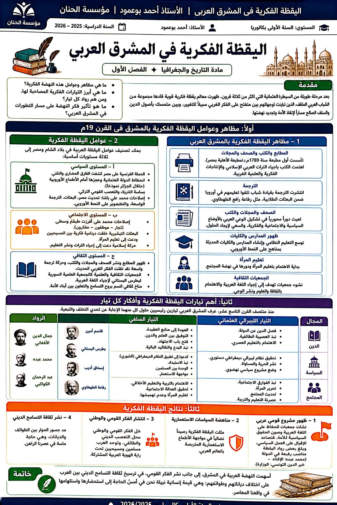
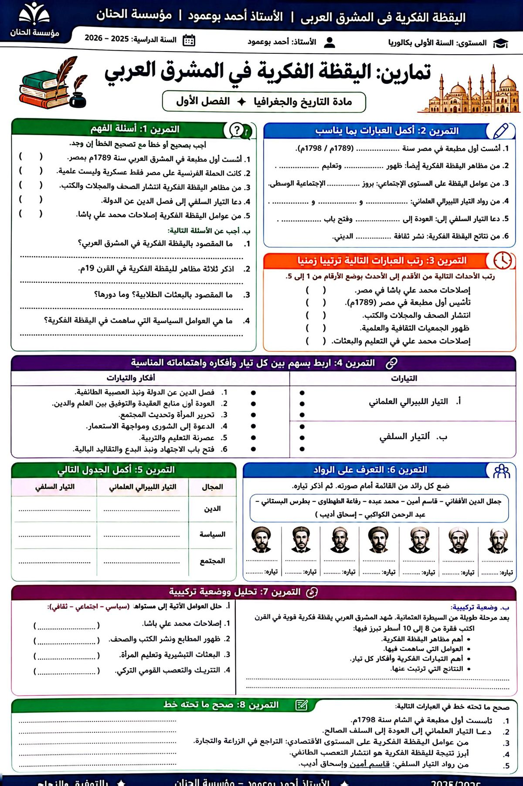

2026 / 2027
اليقظة الفكرية في المشرق العربي خلال القرن 19م
الدرس الرابع · التاريخبعد قرونٍ من السيطرة العثمانية والركود، شهد المشرق العربي (مصر والشام) خلال القرن 19م نهضةً فكرية قوية تضافرت في صناعتها عوامل سياسية واجتماعية وثقافية. وقد اختلفت اتجاهات روّادها بين منفتحٍ على الفكر الغربي يراه سبيلًا للتغيير، ومتشبّثٍ بأصول الدين والسلف الصالح؛ فتبلورت اليقظة عبر تيارين رئيسيين: السلفي والعلماني (الليبرالي)، وأثمرت وعيًا قوميًا وإصلاحيًا عربيًا.
ما مظاهر اليقظة الفكرية بالمشرق العربي وعواملها؟ وما أبرز تياراتها وروّادها وأفكارهم؟ وما تأثير فكر النهضة على تطورات المشرق العربي؟
مقدمة:
بعد مرحلة طويلة من السيطرة العثمانية دامت أكثر من 3 قرون ظهرت معالم يقظة قوية قادها مجموعة من الشباب الذين اختلفت اتجاهاتهم بين منفتح على الفكر الغربي كسبيل للتغيير وبين متشبث بأصول الدين والسلف الصالح كسبيل لتغيير وضع الأمة.
- فما هي مظاهر وعوامل هذه النهضة؟
- وما هي أهم التيارات المصاحبة لها؟ ومن هم رواده؟
- وما هو تأثير فكر النهضة على التطورات في المشرق العربي؟
- ظهور المطابع منذ الحملة الفرنسية (1798م) ثم مطبعة بولاق بمصر.
- نشر الكتب والصحف والمجلات على نطاق واسع.
- الاهتمام بإحياء التراث العربي الإسلامي ونشر الإنتاج الفكري والعلمي الغربي.
- حركة الترجمة الواسعة عن اللغات الأوروبية.
- البعثات الطلابية إلى أوروبا (رفاعة رافع الطهطاوي في عهد محمد علي).
- ظهور المدارس والكليات والدعوة إلى تعليم المرأة.
- دور الصحف والمجلات والكتب في تشكيل الوعي بالأوضاع السياسية والاجتماعية.
- ظهور جمعيات ثقافية وعلمية تعمل على إحياء اللغة العربية وقواعدها.
1- مظاهر وعوامل اليقظة الفكرية بالمشرق بالقرن 19م
1- مظاهر اليقظة الفكرية بالمشرق العربي
شكل ظهور المطابع ونشر الكتب والصحف والمجلات أحد أهم مظاهر اليقظة الفكرية في المشرق العربي حيث ظهرت أول مطبعة سنة 1789 (المطبعة الأهلية بمصر) وقد اهتمت الكتب بإحياء التراث الفكري العربي الإسلامي زيادة على الإنتاجات الفكرية والعلمية الغربية.
في نفس الفترة، انتشرت الترجمة كمظهر آخر لليقظة الفكرية وقاد هذه الحركة شباب تعلم بأوروبا ضمن البعثات الطلابية أمثال: رفاعة رافع الطهطاوي الذي أرسل على عهد محمد علي.
لقد لعبت الصحف والمجلات والكتب دورا أساسيا في تشكيل الوعي العربي بمسائل الوضعية السياسية والاجتماعية والفكرية المزرية ويحاول إيجاد حلول لها.
ولا يمكن أن نغفل ظهور المدارس والكليات وتعليم المرأة وظهور جمعيات ثقافية تعمل على إحياء اللغة العربية ضمن مظاهر هذه اليقظة.
تُصنَّف عوامل اليقظة في بلاد الشام ومصر إلى ثلاثة مستويات:
- الحملة الفرنسية على مصر (1798م): نافذة على التقدم الأوروبي، حملت المطابع والعلماء.
- إصلاحات محمد علي: تحديث مصر وإرسال البعثات ورعاية الترجمة على النمط الأوروبي.
- انحطاط السلطة العثمانية وسياسة التتريك والتعصب القومي التركي، مما أذكى الروح القومية العربية.
- ظهور طبقة وسطى (تجار، موظفون، مفكرون) احتضنت اليقظة الفكرية.
- دور البعثات التبشيرية وجمعياتها في خلق دينامية فكرية.
- الدعوة إلى تعليم المرأة.
- دور المطابع والصحف والمجلات وحركة الترجمة في نشر الثقافة.
- الجمعيات العلمية (الجمعية العلمية السورية التي أسسها بطرس البستاني).
- إحياء اللغة العربية في جوٍّ من التسامح بين العرب على اختلاف دياناتهم.
2- عوامل اليقظة الفكرية
يمكن أن نصنف عوامل اليقظة العربية ببلاد الشام ومصر إلى ثلاث مستويات أساسية:
أ- مستوى سياسي
جاءت الحملة الفرنسية على مصر كنافذة تعرف من خلالها المصريون على مدى تطور وتقدم الأوروبيين خصوصا وأن حملة نابليون لم تكن عسكرية فحسب وإنما علمية أيضا ضمت العلماء والأطباء والمهندسين وحملت معها تقنيات الطباعة.
من جهة أخرى، أصبح انحطاط السلطة العثمانية التي كانت وصية على العالم العربي يشكل عبئا على الشعوب العربية خصوصا أمام تنامي الأطماع الاستعمارية الأوروبية وعجز العثمانيين عن مواجهتها (استعمار الجزائر)، كما لا ننسى دور سياسة التتريك والتعصب القومي التركي في إذكاء روح القومية العربية.
لقد لعبت سياسات الإصلاحات التي انتهجها محمد علي باشا دورا أساسيا في التمهيد للنهضة العربية حيث قام بالعمل على تحديث مصر وأرسل البعثات الطلابية إلى أوروبا وساهم في عمليات الترجمة الواسعة وطور البلاد على النمط الأوروبي.
ب- مستوى اجتماعي
ساعدت إصلاحات محمد علي على ظهور طبقة اجتماعية وسطى بمصر والشام (تجار - موظفون - مفكرون...) لعبت دورا هاما في احتضان اليقظة الفكرية، كما لعبت البعثات التبشيرية دورا مهما في خلق دينامية فكرية في أوساط المسيحيين وفي الدعوة إلى تعليم المرأة، واكبتها حركية إسلامية قادتها جمعيات دعت إلى إحياء التراث العربي ونشر التعليم.
ج- مستوى ثقافي
لقد كان لظهور المطابع دور في نشر الصحف والمجلات والكتب التي نشرت الثقافة وعززت إحياء التراث العربي الإسلامي كما ساعدت بموازاة مع حركة ترجمة واسعة في نشر الفكر الغربي الحديث.
ساهمت الجمعيات الثقافية والعلمية (الجمعية العلمية السورية التي أسسها بطرس البستاني) في إحياء اللغة العربية وقواعدها وقد تم كل ذلك في جو ثقافي اتسم بروح التسامح بين العناصر العربية على اختلاف دياناتهم.
منذ منتصف القرن 19م تبلور تياران رئيسيان حاول كلٌّ منهما الإجابة عن تحدّي التخلف والتبعية:
| المحور | التيار السلفي | التيار العلماني (الليبرالي) |
|---|---|---|
| المرجعية | الرجوع إلى الدين والسلف الصالح | الاقتباس من الفكر الغربي الليبرالي |
| الدين والدولة | نظام حكم إسلامي على مبدأ الشورى | فصل الدين عن الدولة |
| أبرز الأفكار | وحدة المسلمين، محاربة الاستبداد والاستعمار، فتح باب الاجتهاد، التوفيق بين العلم والدين | الديمقراطية الدستورية، الحرية والمساواة، تحديث المجتمع والتعليم، تحرير المرأة |
| أبرز الرواد | جمال الدين الأفغاني، محمد عبده، عبد الرحمن الكواكبي | رفاعة الطهطاوي، بطرس البستاني، أديب إسحاق، فرنسيس مرّاش، قاسم أمين |
2- أهم تيارات اليقظة الفكرية بالمشرق العربي وأفكار كل تيار
1- التياران السلفي والعلماني، أفكارهما وروادهما
منذ منتصف القرن 19م، عرف المشرق العربي جملة من التيارات الفكرية كان أهمها التياران السلفي والعلماني اللذان حاولا كل من منطلقه الإجابة على التحدي الذي يواجه الأمة من تخلف وتبعية. فجاء الجواب السلفي بالرجوع إلى الدين والسلف الصالح أما العلماني فدعا إلى فصل الدين عن الدولة ويمكن تلخيص مضمون أفكار هذين التيارين من خلال الجدول التالي:
| المجال | تيار ليبرالي علماني | تيار سلفي |
|---|---|---|
| الدين | فصل الدين عن الدولة - نبذ العصبية الطائفية - الاهتمام بالتعليم العصري | العودة إلى منابع العقيدة - التوفيق بين العلم والدين - فتح باب الاجتهاد - نبذ البدع والتقاليد البالية |
| السياسة | تحقيق نظام ليبرالي ديمقراطي دستوري - نشر الحرية والمساواة - وضع مشروع سياسي نهضوي | الدعوة إلى تطبيق النظام الديموقراطي (الشورى) - نبذ الاستبداد - الوحدة بين المسلمين - مواجهة الاستعمار |
| المجتمع | نبذ الفوارق الاجتماعية - تحرير المرأة - تحديث المجتمع - عصرنة التعليم والتربية | الاهتمام بالتربية - تحقيق العدالة الاجتماعية والتعليم الأخلاقي - تعليم المرأة وعدم تهميشها |
| الرواد | قاسم أمين - بطرس البستاني - أديب إسحاق - رفاعة الطهطاوي | جمال الدين الأفغاني - محمد عبده - عبد الرحمن الكواكبي |
أعلامٌ طبعوا حركة النهضة بأفكارهم وأعمالهم:
| الرائد | التيار | أبرز أفكاره وأعماله |
|---|---|---|
| جمال الدين الأفغاني (1839–1897م) | سلفي | الدعوة إلى اتحاد المسلمين في مواجهة الأطماع الغربية والأخذ بأسباب التقدم؛ صحيفة «العروة الوثقى». |
| محمد عبده (1849–1905م) | سلفي إصلاحي | الإصلاح الديني وتصحيح الاعتقاد ونبذ البدع وتشجيع العلوم؛ شارك في تأسيس «العروة الوثقى» وتولّى الإفتاء بمصر. |
| عبد الرحمن الكواكبي (1849–1903م) | سلفي | محاربة الاستبداد والدعوة إلى الشورى؛ من مؤلفاته «طبائع الاستبداد ومصارع العباد» و«أم القرى». |
| رفاعة الطهطاوي | ليبرالي | قائد حركة الترجمة والبعثات في عهد محمد علي، والدعوة إلى التعليم وتحديث المجتمع. |
| بطرس البستاني | ليبرالي | تأسيس الجمعية العلمية السورية وإحياء اللغة العربية ونشر المعارف. |
| قاسم أمين | ليبرالي | الدعوة إلى تحرير المرأة وتعليمها ونبذ تهميشها. |
رواد اليقظة الفكرية
التيار السلفي: جمال الدين الأفغاني
السيرة الذاتية: ولد سنة 1839 من أسرة أفغانية، نشأ في كابول وتعلم اللغات العربية والفارسية. كما درس العلوم الإسلامية. جند حياته لإصلاح أمور المسلمين انطلاقا من إصلاح النفوس وتهذيب الأخلاق. ولخص أفكاره الإصلاحية في كتابات أهمها: أم القرى وصحيفة العروة الوثقى. وتوفي سنة 1897م.
- الدعوة إلى اتحاد المسلمين ضد الأخطار والأطماع الغربية.
- الأخذ بأسباب التقدم الغربي.
- الدعوة إلى الرجوع إلى الأصول وتجنب البدع.
عبد الرحمن الكواكبي
السيرة الذاتية: ولد بحلب سنة 1849 ونشأ بها متأثرا بمحيطه العائلي. تشبع بقيم العروبة والإسلام في مدرسته الكواكبية، جند حياته لمحاربة الاستبداد العثماني. توفي سنة 1903.
- الرجوع إلى السلف الصالح.
- الدعوة إلى نظام حكم إسلامي قائم على مبدأ الشورى وفق الطراز النبوي.
- جند نفسه لمحاربة الاستبداد فالطريق الأمثل لحل مشاكل الأمة هو القضاء على الاستبداد (كتاب طبائع الاستبداد ومصارع العباد).
محمد عبده
السيرة الذاتية: ولد سنة 1849 بمصر، التحق بالأزهر وتخرج منه حاصلا على شهادة العالمية. عمل مدرسا للتاريخ بدار العلوم وانخرط في ثورة أحمد العرابي سنة 1882 ضد الإنجليز، نفي على إثرها إلى سوريا (3 سنوات). أسس إلى جانب أستاذه جمال الدين بباريس العروة الوثقى. أسس جمعية إحياء العلوم العربية لنشر المخطوطات.
- تصحيح الاعتقاد.
- التخلص من البدع.
- تشجيع العلوم الدينية والدنيوية وتربية النشء عليها.
التيار الليبرالي العلماني
- أديب إسحاق: الدعوة إلى الحرية والمساواة نظرا لتلازمهما - نبذ الامتياز والمطالبة بالمساواة.
- فرانسيس مراش: نبذ الامتياز ونقد سياسة التتريك.
- أنطوان فرح: تنظيم السلط بطريقة عصرية تضمن السيادة (الشعب) - فصل الدين عن الدولة.
أفضت اليقظة الفكرية إلى بروز مشروع قومي عربي، فظهرت جمعيات تدعو إلى الحفاظ على اللغة العربية وحقوق الأمة، وتنامى الإقبال على العمل السياسي حتى وصل بعض روّاد النهضة إلى مناصب عليا في الدولة (محمد عبده في الإفتاء، وخير الدين التونسي في الوزارة).
كما أسهمت النهضة في مناهضة السياسات الاستعمارية المتربّصة بالعالم العربي، وفي انتشار القومية والوطنية محلّ التعصب الديني والطائفي، وفي توحّد العرب مسلمين ومسيحيين وإشاعة روح التسامح الديني بينهم.
3- نتائج اليقظة الفكرية
لقد كان من أهم نتائج اليقظة الفكرية:
- ظهور مشروع قومي عربي حيث ظهرت جمعيات دعت للحفاظ على اللغة العربية وحقوق الأمة السياسية فزاد الإقبال على العمل السياسي على درجة أن بعض رواد اليقظة وصلوا إلى مناصب عليا في الدولة: محمد عبده (الإفتاء)، خير الدين (الوزارة).
- كما لا يجب أن ننسى دور اليقظة في حمل لواء المناهضة للسياسات الاستعمارية المتربصة بالعالم العربي والمحافظة على العروبة وانتشار القومية والوطنية محل التعصب الديني والطائفي واتحاد العرب سواء كانوا مسلمين أو مسيحيين.
مفاتيح للتحليل والإنشاء التاريخي:
اعتمادًا على جدول المقارنة وجدول الرواد، حرّر فقرة (6–8 أسطر) تُوازن فيها بين الحلول التي اقترحها التيار السلفي وتلك التي نادى بها التيار العلماني لمواجهة التخلف والاستبداد، مبديًا أوجه الاختلاف والالتقاء بينهما.
موارد مكمّلة تفتح من درايف الأستاذ (فيديو، عرض، وثيقة، صور):
إنفوغرافيا الدرس ونسخة التمارين من كتيب الأستاذ أحمد بوعمود:




شكّلت اليقظة الفكرية بالمشرق العربي ردّ فعلٍ واعيًا على الهيمنة الاستعمارية والتخلف، وأسّست عبر تيّاريها السلفي والعلماني لوعيٍ قومي وإصلاحي، ونشرت فكر التسامح الديني والوحدة بين العرب على اختلاف دياناتهم وطوائفهم، ممهّدةً لنضال الشعوب العربية من أجل التحرر وبناء الدولة الوطنية.
خاتمة:
لقد ساهمت النهضة العربية إضافة إلى نشر الفكر القومي في نشر فكر التسامح الديني بين العرب على اختلاف دياناتهم وطوائفهم لما نحن في أمس الحاجة إليه اليوم.